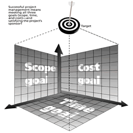

- Email us or contact us by phone.
I'm
a great believer that any tool that enhances communication has profound
effects in terms of how people can learn from each other, and how they
can achieve the kind of freedoms that they're interested in.Bill Gates
Tweets
- Irony .. "100 people get the Swine Flu and everybody wants a mask....10 million people have AIDS and no one wants to wear a Condom."..??? 187 days ago
- RT @pmstudent: Only 69 comments so far, need more! How Do You Define Project Management To Your Friends? http://bit.ly/1f6VlY 191 days ago
- @Paul_Rasmussen Great article on risk. Easy to underestimate the unique circumstances facing project delivery 192 days ago
- Making realistic schedule commitments http://post.ly/1Bql 255 days ago
- OpenProj | Free Hosted Project Management Software http://post.ly/1BqF 255 days ago
Project Management Triple Constraints
Home » Articles » Project Mgt » Triple Constraints
"the art of project management. A mixture of administration, planning, experience, analysis, people-skills, political wrangling, leadership and a little bit of luck"
By Rod Hutchings MAppSc MAIPM MACS RegPM(MPD)
The triple constraint involves making tradeoffs between scope, time and cost for a project. It is inevitable in a project life cycle that there will be changes to the scope, time or cost of the project. However where most projects fail is that when one of the areas changes and appropriate adjustments are not made to the other areas.
For example, if a deadline is moved up, what actions are needed with regards to cost or scope to ensure the deadline is met without compromising the quality of the product.

Write a comment
Posts: 9
Reply #9 on : Mon August 03, 2009, 03:26:24
Posts: 9
Reply #8 on : Thu April 23, 2009, 03:08:35
Posts: 9
Reply #7 on : Fri April 03, 2009, 19:26:10
Posts: 9
Reply #6 on : Wed October 22, 2008, 23:12:15